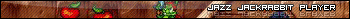
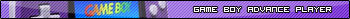
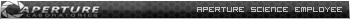
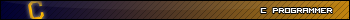
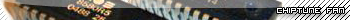
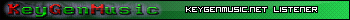

Hiya!
Hiya!
My name is Sterophonick! I like homebrew, emulation, demoscene, malware, and the like!
This website is more or less a place for me to put all the stuff I have made.
Come in and take a look! :)
Have fun!








*this site is best viewed using Ned's cape 1.0 or lower